Exceptions are a part of many high level languages, allowing for a program to handle an unexpected error gracefully without the process being terminated.
Windows offers its own mechanism for exception handling called as Structured Exception Handling (SEH). This blog post will take a look at SEH on x86_64 and how it works internally.
SEH is Microsoft's implementation for exception handling in Windows. This extension allows for runtime error handling in C/++. It is also how exceptions in higher level languages such as C# are implemented. This is extensively used in Windows including the kernel. This can be thought of as similar to Unix signals. However the difference is that unlike signals where you register handlers for a particular signal at runtime this gives you the conventional try-catch mechanism that is seen in most high level languages.
An example usage of SEH can be seen below.
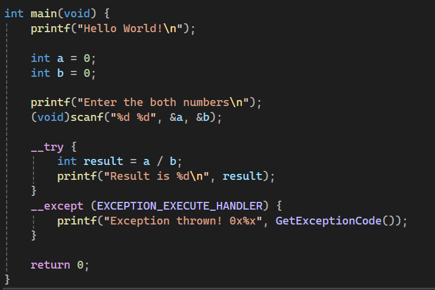
Example usage of SEH
In the __except block a desired filter can be chosen for how the execution should proceed once the exception occurs.
// Defined values for the exception filter expression
#define EXCEPTION_EXECUTE_HANDLER 1
#define EXCEPTION_CONTINUE_SEARCH 0
#define EXCEPTION_CONTINUE_EXECUTION (-1)
-> EXCEPTION_EXECUTE_HANDLER executes the code in the __except block.
-> EXCEPTION_CONTINUE_SEARCH looks for the next exception handler to be executed. This is used when an exception is unrecognized.
-> EXCEPTION_CONTINUE_EXECUTION executes the code in the __except block and then rerun the code where the exception was thrown.
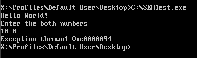
Division by zero exception being caught
Here it can be seen that when the code tries to divide by zero the __except block runs and then using GetExceptionCode we get the exception that occurred which in this case was STATUS_INTEGER_DIVIDE_BY_ZERO.
Now how are these exceptions implemented and where are these located?
The exception directory is a section of the PE executable which contains a list of RUNTIME_FUNCTIONS.
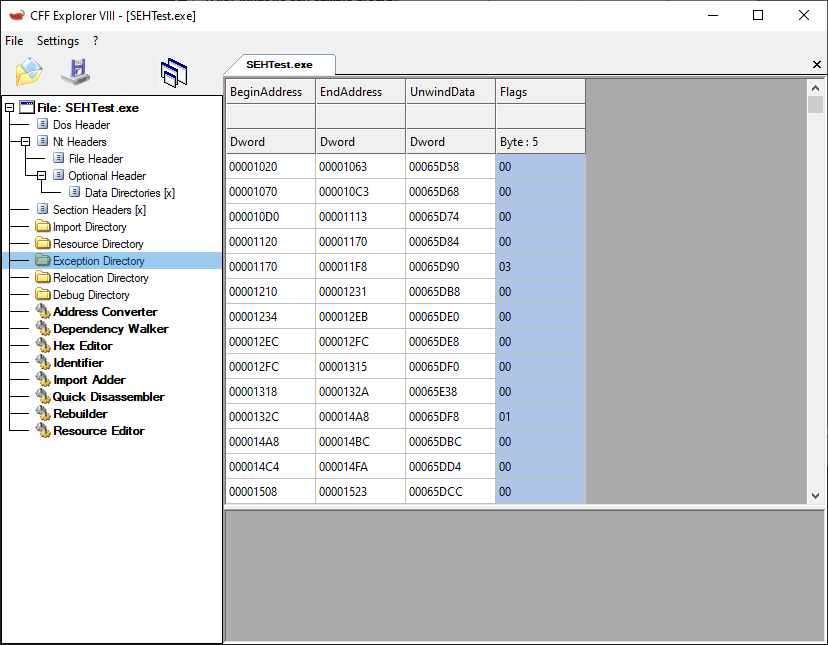
Exception directory in PE executable
typedef struct _RUNTIME_FUNCTION {
ULONG BeginAddress;
ULONG EndAddress;
ULONG UnwindData;
} RUNTIME_FUNCTION, *PRUNTIME_FUNCTION;
This RUNTIME_FUNCTION contains the address range and the unwind data to get information about a particular exception thrown. The UnwindData tells how to handle an exception that occurred in the BeginAddress to EndAddress range.
When an exception occurs the RtlLookupFunctionEntry function parses this table and finds the corresponding exception handler to execute.
It is also possible to add a RUNTIME_FUNCTION table during execution time using the RtlAddFunctionTable function. This is used by higher level languages for implementing exceptions.
Now let us take a look at when an exception takes place.
On x86_64 whenever an exception occurs (for example a division by zero) an interrupt is generated and the interrupt handler set up by the OS is called. I will be looking at division by zero for this example but similar handlers are set up for any other exceptions that occur. The list of interrupt handlers are stored in an Interrupt Descriptor Table.
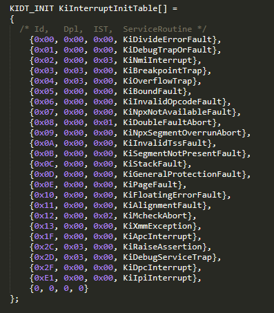
Interrupt Descriptor Table
Each interrupt has its own index for example the division by zero handler is located at index number (vector) 0.
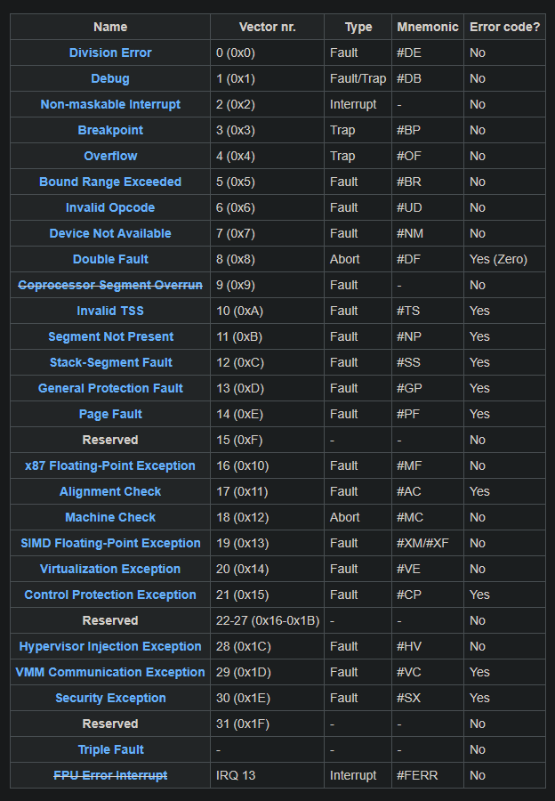
List of exception vectors
In x86_64 Windows KiDivideErrorFault is called when a division by zero occurs. Every interrupt handler first preserves the CPU registers such that it can continue execution after the exception or hardware interrupt has been handled. After the context is preserved, an EXCEPTION_RECORD and EXCEPTION_FRAME is prepared, and KiDispatchException is called.
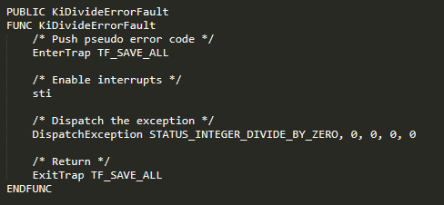
KiDispatchExceptionKiDispatchException is called with an EXCEPTION_RECORD which contains information about the type of exception that occurred, where it occurred and other details regarding it. The EXCEPTION_FRAME includes few other CPU registers and the FPU state.
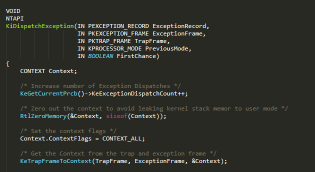
First the Trap frame and Exception frame are converted to a CONTEXT which is used by the exception dispatcher functions in Rtl.
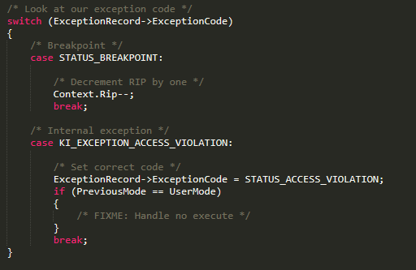
Converting Trapframe to Context
Based on the type of exception that occurred certain changes are made. For example when a breakpoint occurs the instruction pointer pushed points to the instruction after the breakpoint instruction so it is decremented by one byte.
Then, based on which processor mode the exception occurred in, it is handled accordingly. I will look into how user mode exceptions are handled here but for kernel mode it directly calls the function for dispatching exceptions.
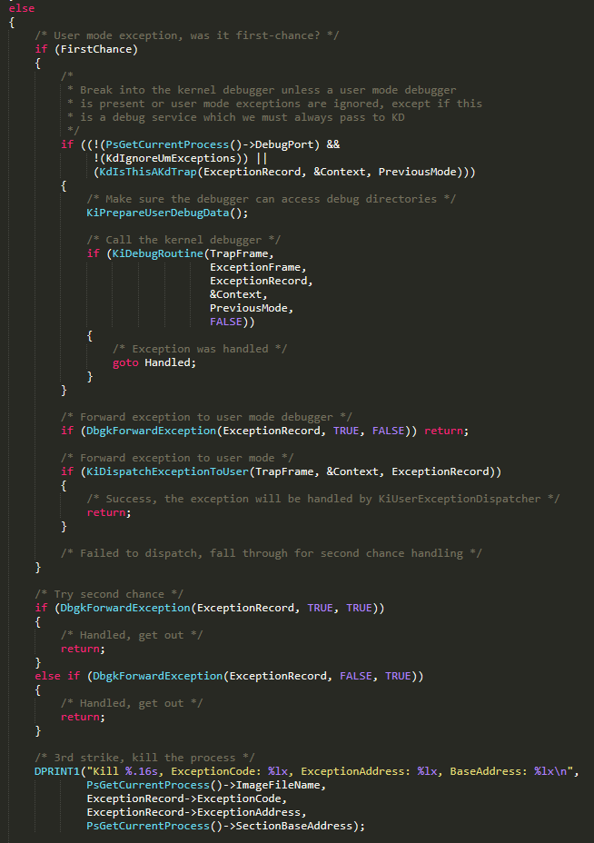
Now based on how many times an exception has occurred it will be handled differently. If it is the first time, the debugger (if any present) will be informed and then the exception handler is called. If it is the second time only the debugger will be informed. If it is the third time the process will be terminated. Usually when there isn't any exception handler present it will fall through and be striked out the third time. KiDispatchExceptionToUser then passes the exception to user mode.
KiDispatchExceptionToUserThe function first sets up the stack where it would store the context and other exception information.
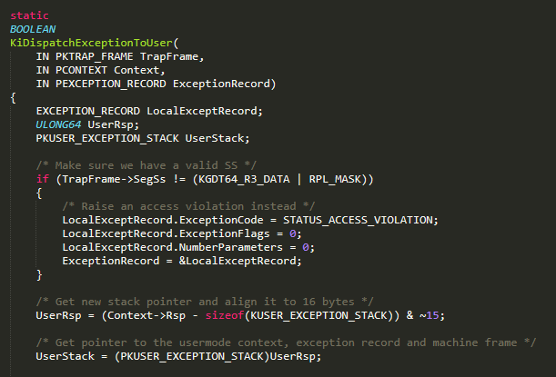
Setting up the user mode stack
Then it writes in the UserStack and sets up the registers pointing to Exception Record and Context.
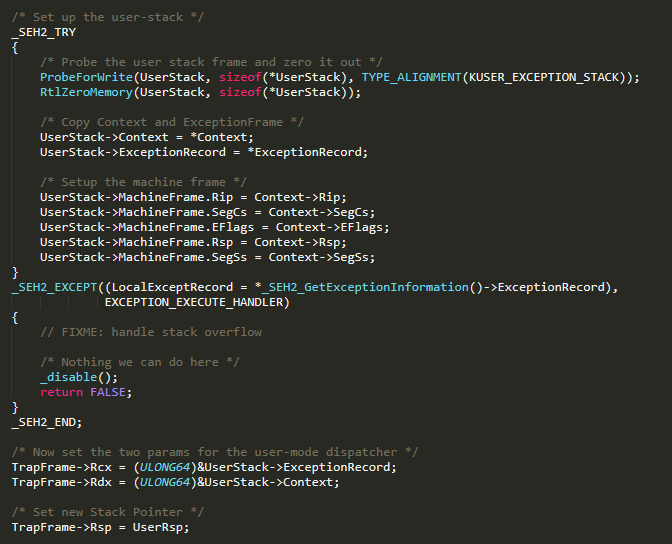
Writing exception record and context to the user stack
Finally it sets the instruction pointer to a user mode function. When the function returns and the interrupt is finished being handled the registers are restored the processor will execute code at this particular function.
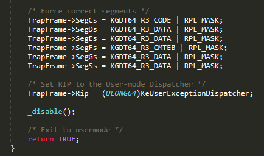
Setting instruction pointer to the user mode dispatcher
This function is located in ntdll.dll.
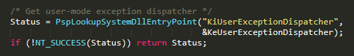
KiUserExceptionDispatcher being retrieved from ntdll
KiUserExceptionDispatcher then calls RtlDispatchException which dispatches the exception. If an error occurs then ZwRaiseException is called otherwise ZwContinue is called and the thread execution continues.
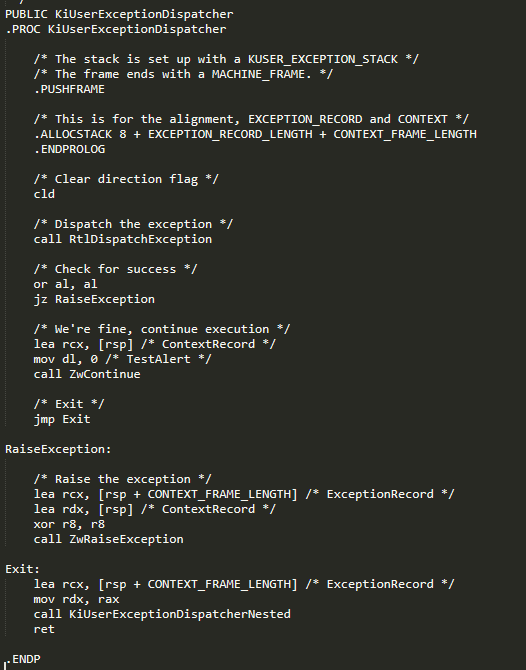
RtlDispatchExceptionThe function first executes any vectored exception handlers and then the ones that continue after an exception
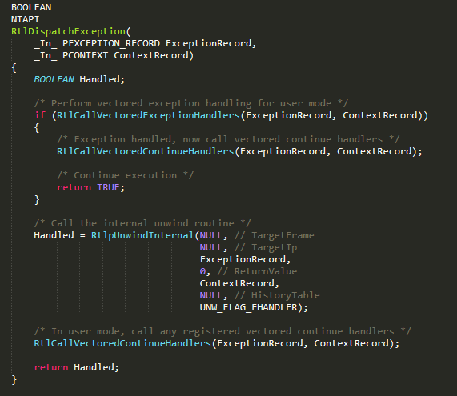
If there are no vectored exception handlers it calls an internal unwind function here RtlpUnwindInternal to look for the the corresponding exception handler.
As I have previously stated RtlLookupFunctionEntry looks for the corresponding function in the function table. This function internally calls RtlLookupFunctionTable to get the running executable's exception directory and locate the function entry from there.
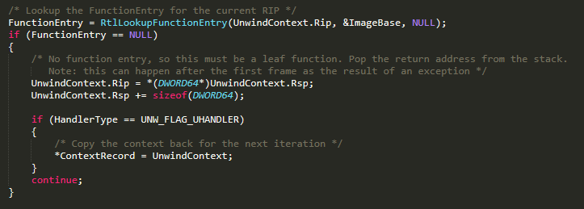
Looking up function entry in exception directory
RtlVirtualUnwind is then called to get the corresponding exception handler which is then called.
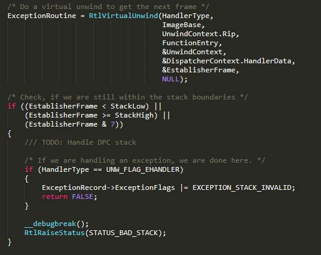
RtlVirtualUnwind getting exception handler
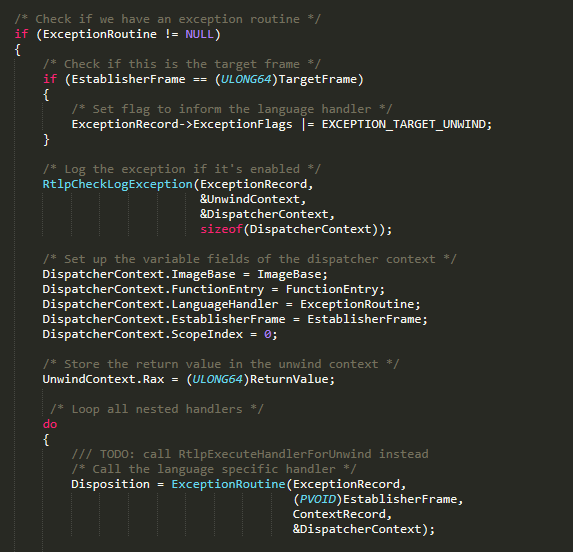
Vectored Exception Handling allows for a program to register exception handlers for the entire process. Unlike SEH where it is for a specific section of code, VEH is global. An example usage of VEH can be seen here.
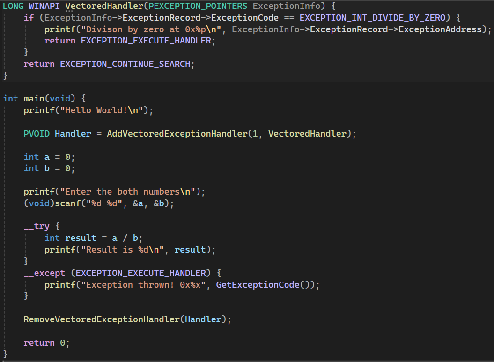
Example usage of VEH
VEH are run before SEH runs as it was seen previously.
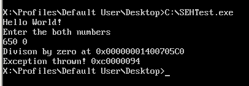
These VEH are stored in a linked list. When an exception handler is added it is added to the tail of the list.
typedef struct _RTL_VECTORED_HANDLER_ENTRY
{
LIST_ENTRY ListEntry;
PVECTORED_EXCEPTION_HANDLER VectoredHandler;
ULONG Refs;
} RTL_VECTORED_HANDLER_ENTRY, *PRTL_VECTORED_HANDLER_ENTRY;
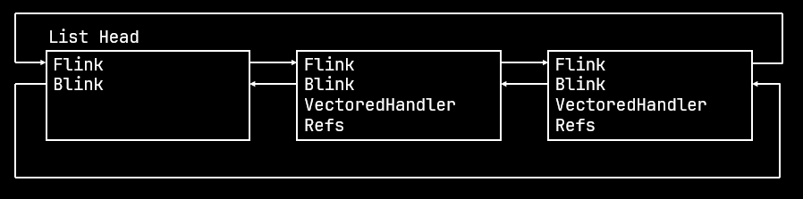
When an exception is raised the list is walked through and calls the handlers that were registered. After that the SEH handlers are called.
In this blog we took a look at SEH and how it is implemented on x86_64. We went through the entire process from when the processor generates an interrupt to the exception handler being called. While I looked at ReactOS code in here the behaviour will be similar on Windows.